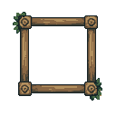
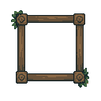

Forest · Stage 3 board frame
Review candidate · Actual Unity art-only captures · Approved Stages 1 and 2 unchanged · No merge
15 native modules / 16 LibreSprite documents6 PixelLab generations · 21 total64×64 gems and cells · 512×512 board
Carved wood knots, straight repeatable rails, centered pegs, separate side supports, and four quiet ivy accents. All decoration stays outside the cell opening. The wood palette comes from the approved portrait frame.
Actual Unity Game View
Scroll large captures instead of fitting them down. This study uses the existing approved Dungeon 64px cell as the shared readability benchmark and the six gem sprites serialized in Game.unity. Production Forest cell bindings and all gameplay remain unchanged. Full-zone assembly is Stage 5.
Corners and trims · actual Unity crops at 4×
Native modules
Board Corner TL23 × 23 · 4 colors
23x23 chamfered structural block with the native PixelLab spiral carving; centered at (11,11), upright light.LibreSprite source
Board Corner TR23 × 23 · 4 colors
23x23 chamfered structural block with the native PixelLab spiral carving; centered at (11,11), upright light.LibreSprite source
Board Corner BL23 × 23 · 4 colors
23x23 chamfered structural block with the native PixelLab spiral carving; centered at (11,11), upright light.LibreSprite source
Board Corner BR23 × 23 · 4 colors
23x23 chamfered structural block with the native PixelLab spiral carving; centered at (11,11), upright light.LibreSprite source
Board Rail Top32 × 11 · 5 colors
11px native rail, centered at 5; exact repeated endpoints and broad quiet timber planes.LibreSprite source
Board Rail Bottom32 × 11 · 4 colors
11px native rail, centered at 5; exact repeated endpoints and broad quiet timber planes.LibreSprite source
Board Rail Left11 × 32 · 5 colors
11px native rail, centered at 5; exact repeated endpoints and broad quiet timber planes.LibreSprite source
Board Rail Right11 × 32 · 4 colors
11px native rail, centered at 5; exact repeated endpoints and broad quiet timber planes.LibreSprite source
Board Connector11 × 11 · 4 colors
11x11 centered wooden peg; shared material family with the approved portrait.LibreSprite source
Side PostRepeat23 × 64 · 4 colors
23x64 sturdy vertical support; intended open repeat ends, exact y-seam equality.LibreSprite source
Side PostCap27 × 24 · 4 colors
Padded 27x24 carved cap; overlaps repeat by four pixels to avoid cut end seams.LibreSprite source
Side PostFoot31 × 36 · 4 colors
31x36 complete spreading base; kept outside all cells, no clipping or flattened crop.LibreSprite source
Board Ivy Upper21 × 30 · 3 colors
Padded source ivy cluster; used only outside cell opening, no bright gem-like colors.LibreSprite source
Board Ivy Lower20 × 31 · 3 colors
Padded source ivy cluster; used only outside cell opening, no bright gem-like colors.LibreSprite source
Side Brace23 × 13 · 4 colors
23x13 horizontal support brace joining each outer post to the rim; does not enter cells.LibreSprite source
Raw source and native cleanup
PixelLab source · 128×128
7 opaque colors from the approved wood/ivy palette.LibreSprite source cleanup
6 opaque colors; no scaling. The native knot carving feeds the corner modules above. Rails and support connections are authored separately.
Verified
Unity compilation and the explicit board-shell test passed. Captures match exact nearest-neighbor enlargement at 1×/2×/3×. The entire 512×512 board matches an independent composite of the original gem and cell PNGs. Hiding the frame changes zero pixels inside the opening. Five frame sizes passed centered-join checks; the undersized case hides safely. All 16 LibreSprite documents round-trip exactly, and 1,729 protected files remain unchanged.
Native asset sheet · Report · Pixel QA · Unity test · Approved Stage 2
Stopped for approval before Stage 4. No production integration or merge.